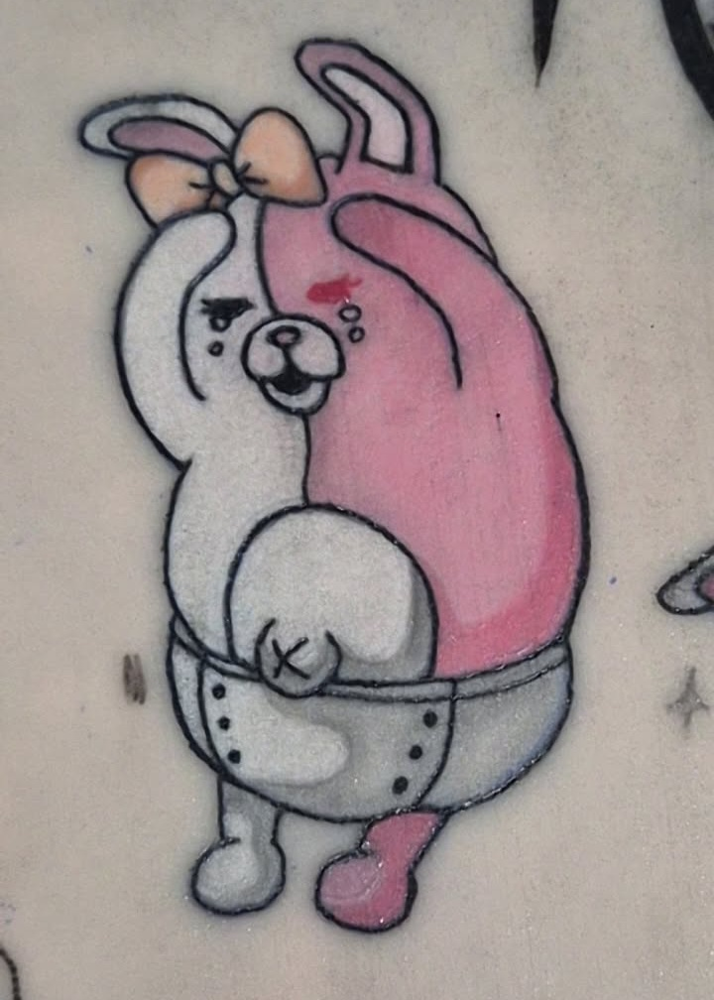
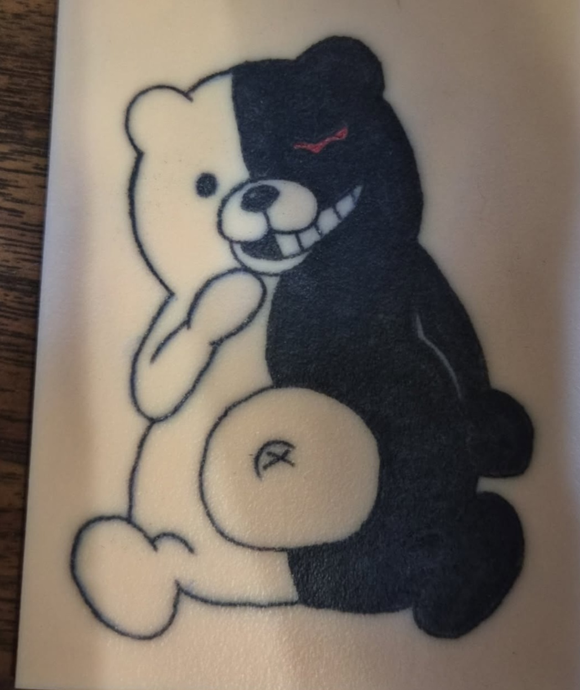
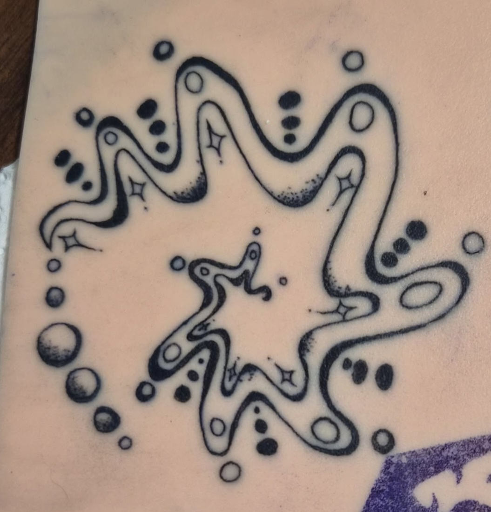
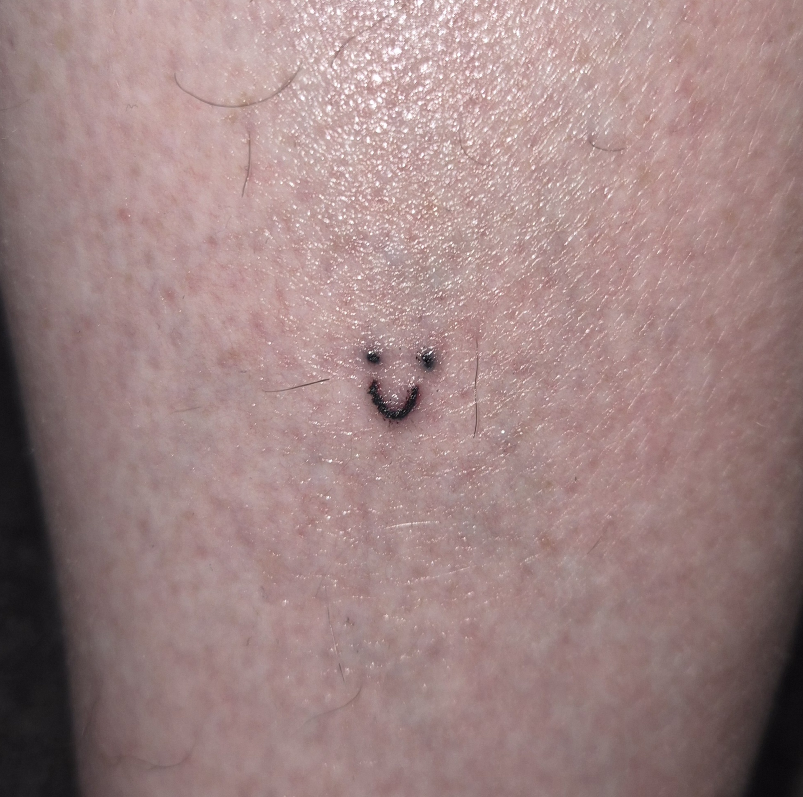
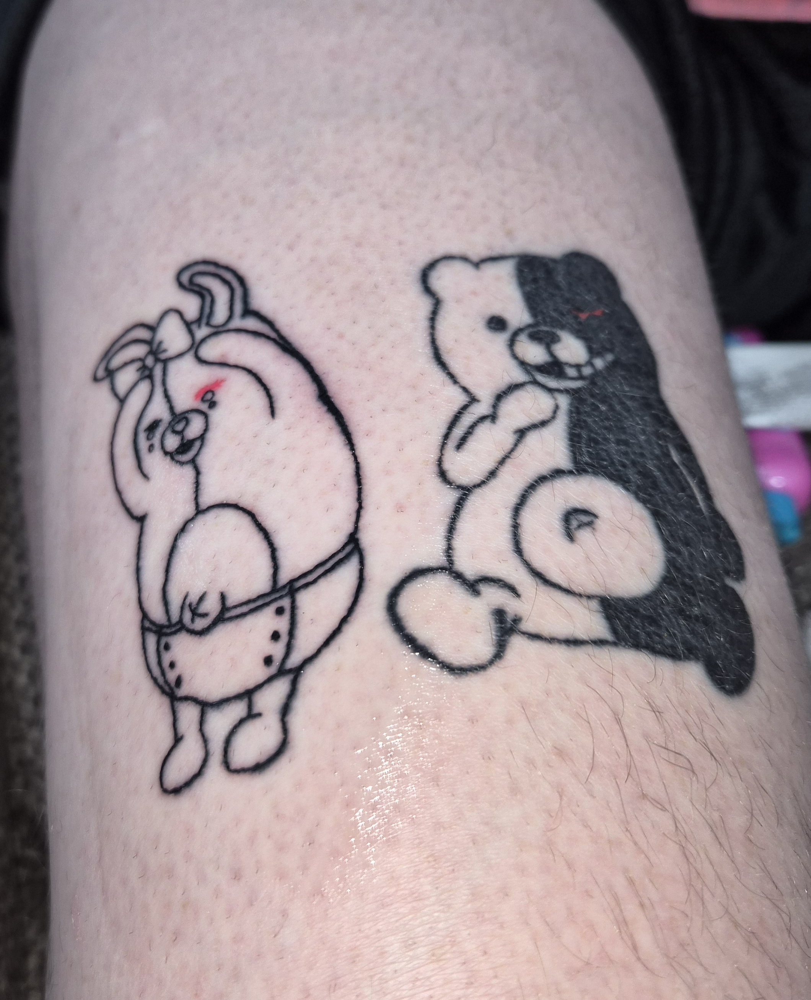
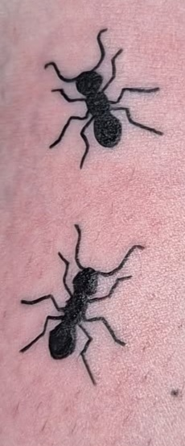
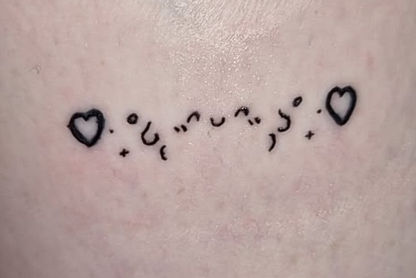

Tattoo Portfolio
A portfolio for my fake skin and real skin work. I am a beginner with about a month of practice and no apprenticeship. I started with an Amazon kit and have been building up a collection of better quality supplies since then. I use Dynamic ink and Reelskin.
Fake skin works

Practice for putting this on my dad eventually. I used a 7rl for the lines and 7m1 for filling the color.

Practice before putting it on my dad. I do not remember what size needle I used.

Just a design I found on pinterest. I would like to draw something similar and maybe put it on myself. I believe I used a 7rl for this.
Real skin works

This was the first tattoo I did on real skin and it is on my dad's leg, just a tiny smiley face that took about 10 seconds. I don't remember what size needle I used.

This is another one on my dad. I did Monokuma first and Monomi's outline a few weeks later. I used a 9rl for the lines on Monokuma, 11rl to fill in the black, 7rl and 5rl for the lines on Monomi. I will be doing the color on her soon.

One of my favorites on myself so far. Used 5rl for the lines and 11rl to fill it in.

The hearts are a little wonky but I like it aside from that. Used 5rl for most of it and a 9rl for a bad attempt at fixing the hearts.